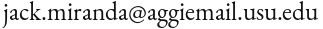

Hello!
I'm a class-of-2020 undergraduate at Utah State University double-majoring in Computational Mathematics and Computer Science and minoring in Anthropology.
I'm interested in using mathematical and computational techniques to help answer big questions about human societies and how they evolve. With a background in space engineering, I'm also particularly interested in researching the social structures and practices that will best sustain human settlements in space and on other worlds.
Feel free to check out some of the pinned projects on my GitHub or email me at 